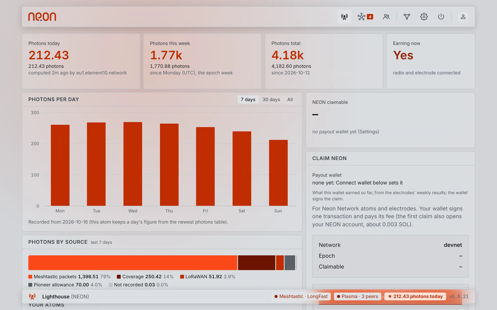
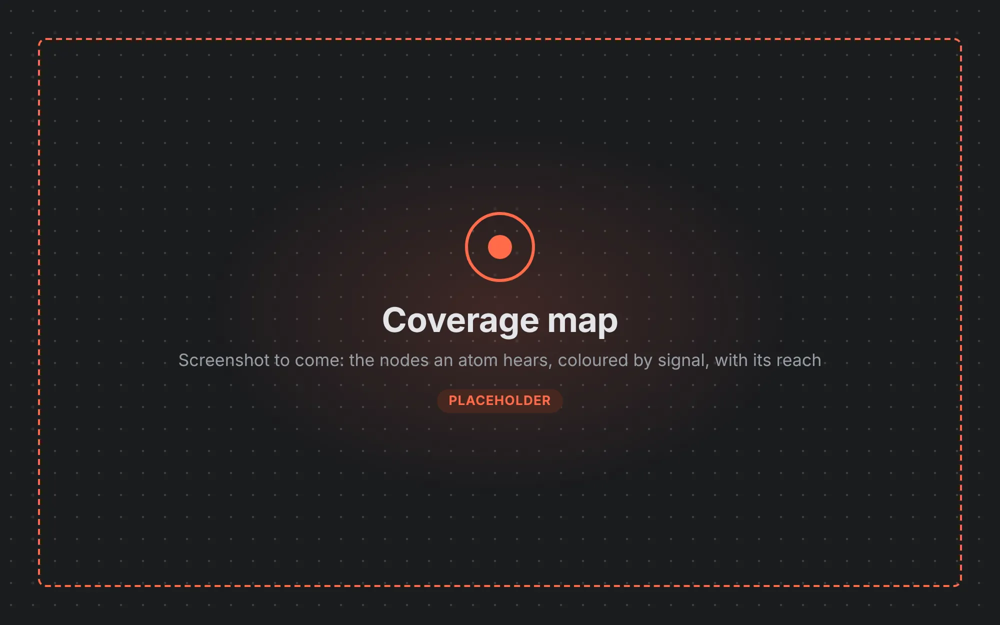
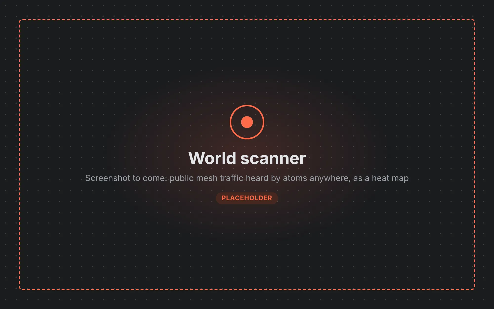
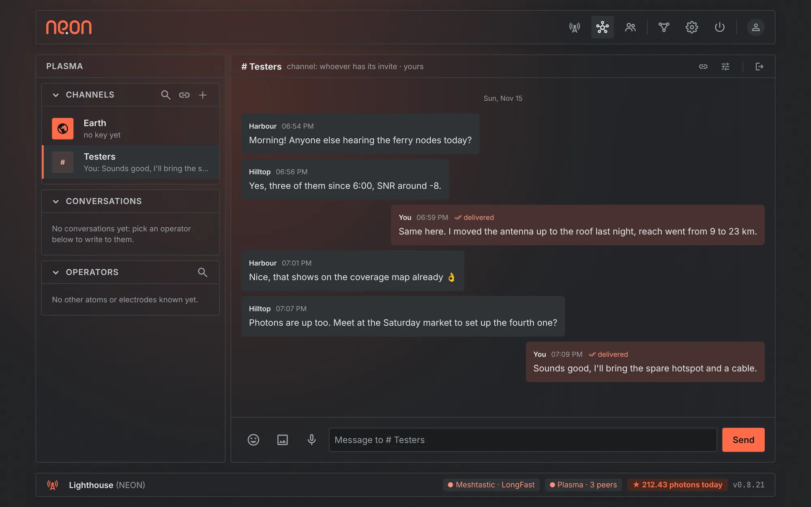
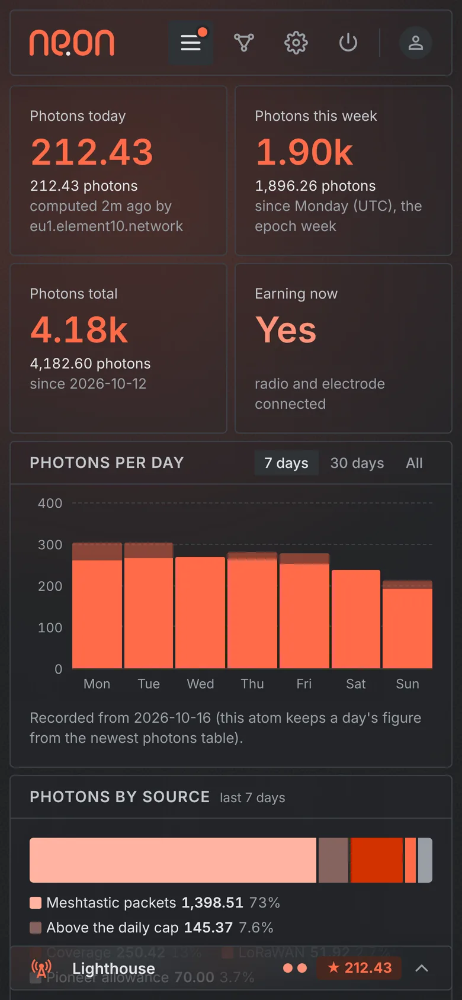

Neon turns a Helium IoT hotspot into an atom: a Meshtastic super-node for everyone around it that keeps serving Helium sensors, links up with the other atoms over the internet, and earns NEON for the coverage it proves.

The hotspot's 8-channel LoRa concentrator hears the local Meshtastic mesh and relays it, from a roof or a window, within the band's power and airtime limits (EU868, US915).
It keeps forwarding LoRaWAN sensors with the hotspot's own Helium key, and can pass The Things Network's on too, so the sensors around it stay covered.
With a Heltec V3 board on USB it joins the local MeshCore mesh as well: adverts, the Public channel, contacts and its coverage.
The Plasma links atoms over the internet: end-to-end encrypted direct messages and channels, photos, voice notes, videos, reactions, voice and video calls.
Read and write Meshtastic and MeshCore channels and direct messages from the panel, with delivery marks, a mailbox for nodes that are away, and traceroutes.
Every node the atom hears directly, coloured by signal, with its reach; the other atoms of the network, Helium hotspots near you and MeshCore nodes on one map.
Public Meshtastic and MeshCore traffic heard by atoms anywhere, live, with a heat map: only what its senders allowed onto the internet.
Live packets with their signal and hops, hour by hour counts, airtime used against the band's limit, photons per day and by source.
Flash the card, plug it in, and find it at neon.directory; no network cable? it opens its own Wi-Fi to set up from. A setup code only the installer sees.
Every atom paid to your wallet on one page: reporting, clock, packet forwarder, who hears it, and a direct message from the network when one goes quiet.
Signed releases installed at night; a new version that does not start properly is rolled back. Stable or development channel, your choice.
Neon Pro in any colour you like, light or dark, or the Terminal theme; your name and picture on the Plasma; SSH and users from the panel; an encrypted key backup.

Every node your atom hears directly, coloured by signal, with its reach; the other atoms, Helium hotspots and MeshCore nodes around you.

Public Meshtastic and MeshCore traffic heard by atoms anywhere, live, drawn where its senders are.

The atoms talk to each other over the internet through electrodes, servers anyone can run. On top of that runs a messenger for the people behind them.
The panel is a web page the atom serves itself, over HTTPS at its own name. Open it on a phone at home or on the road: photons, messages, the map, settings.

A Meshtastic packet that atoms of two or more independent operators heard within five seconds is worth 1 photon, shared between them. Independent means another internet connection, another wallet and another roof.
A packet only one operator heard earns a quarter photon, when others heard the same sender that day. Helium sensor uplinks two operators heard earn 0.1.
An atom earns at most 100 photons from one sender, and from each other operator whose atoms heard the same packets 500, then a tenth of the rest up to 1,000. So faking traffic with a friend pays little.
Each week's NEON goes 70 % to atoms by their photons, 10 % to the electrodes that carried their reports, 20 % to the treasury. At most 1 billion NEON, the weekly amount halving every two years. NEON is never sold: it is only earned.
An atom's key is signed by its hotspot's secure chip (the ECC608 that holds its Helium key). Only atoms on an onboarded Helium hotspot earn, one atom per chip.
Every reception report is signed by the atom. The radio's microsecond counter must agree with its clock, and a report that arrives late does not count.
Atoms send short radio beacons that their neighbours check: a position counts once atoms of two other networks hear it as its distance allows. Atoms on one roof count as one witness.
Electrodes sign their day logs, and fixed rules turn them into the weekly result: the same logs always give the same result, computed twice on separate machines. It goes on Solana and can be claimed after a challenge period, each operator with their own wallet.
Atoms install only releases signed with the project's key, and the installer checks its scripts against a signed list before running them.
Each week's result names the rules' version and the logs it was computed from, and a change to the rules is announced before it applies. The software is GPL-3.0, like Meshtastic.
A Helium IoT hotspot built on a Raspberry Pi 4 (tested: the RAK Hotspot Miner V2). It keeps serving Helium sensors too.
Flash the Neon SD image with Raspberry Pi Imager. The atom names itself and installs the newest release on its first start.
Antenna first. Then a network cable to your router and power. Give it up to 30 minutes the first time.
On a phone or computer on the same network, open neon.directory: your name, a password, your wallet and where it stands.